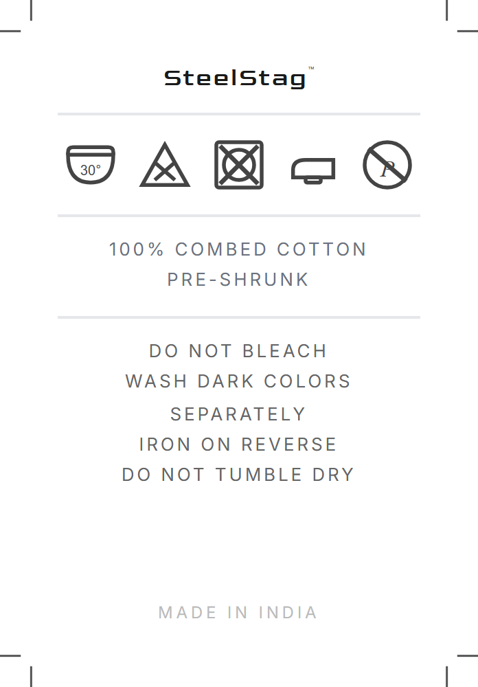
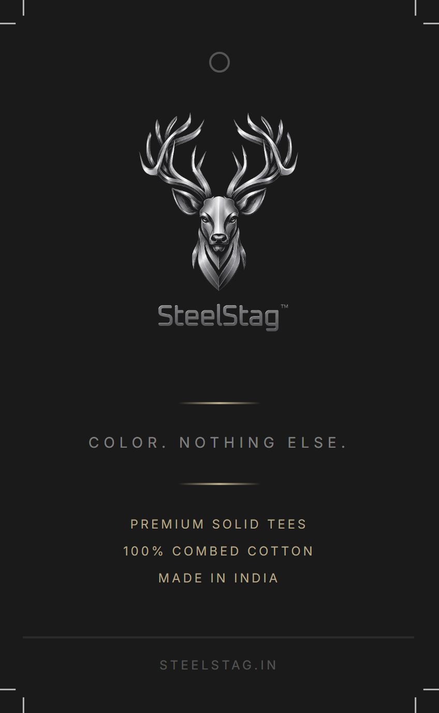
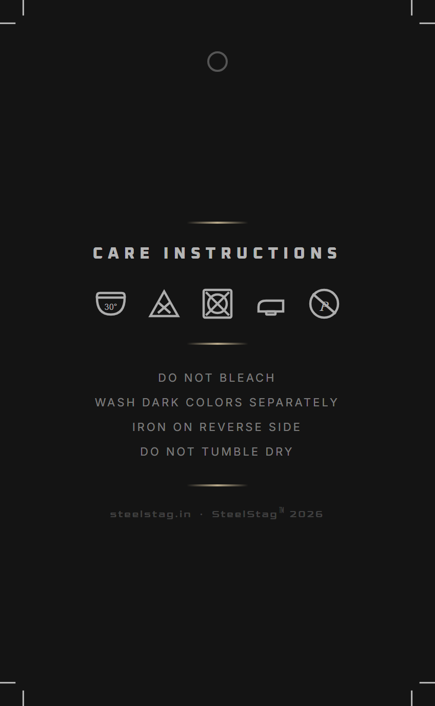
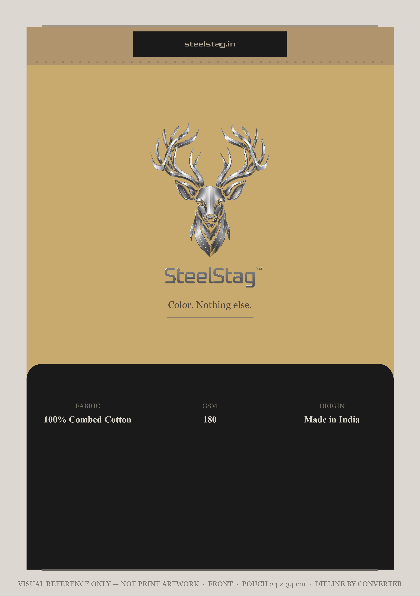
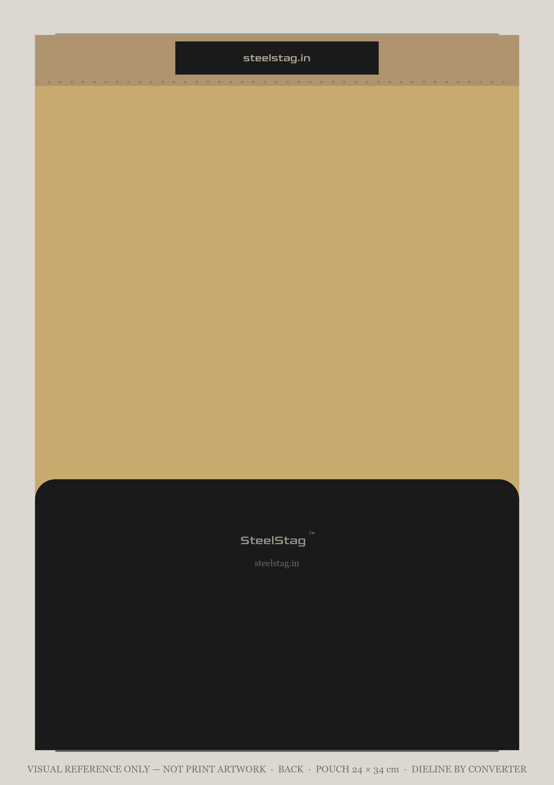

Production Summary
| Collection | SS2026 Core T-Shirt Launch |
| Total Order Quantity | 1,200 pcs |
| Styles | ST-RN-001 Round Neck · ST-VN-003 V-Neck |
| Colours | Jet Black, Bright White, Seaport Teal, Wild Ginger, Brown Sugar |
| Fabric | 100% Combed Ring-Spun Cotton · Single Jersey · 180 GSM |
| Current Stage | Bulk production in progress |
| Production Basis | This Tech Pack, plus the agreed factory pattern and production reference as confirmed directly with SteelStag |
Production note: Follow the approved Tech Pack. No fabric, construction, trim, label, packaging, or colour substitutions are allowed without written approval from SteelStag.
Product Specifications
Style Codes
| ST-RN-001 | Men’s Round Neck T-Shirt |
| ST-VN-003 | Men’s V-Neck T-Shirt |
Fabric
| Composition | 100% Combed Cotton — Single Jersey |
| Yarn Count | 30s Combed Ring-Spun |
| GSM | 180 GSM · tolerance ±5 GSM |
| Dyeing | Reactive dyed |
| Finish | Light enzyme wash · no heavy silicone finish |
| Pre-treatment | Fabric to be pre-washed / pre-shrunk before cutting |
| Shrinkage | Maximum ±3% after wash · no twisting |
Construction
| Stitch Density | 12–14 SPI |
| Thread | Self-colour polyester thread to match each colourway |
| Body Seams | Overlock / serger |
| Neck Finish | Clean-bound self-fabric tape · no rib band · single needle topstitch 1/8" from edge · shoulder-to-shoulder neck tape required for stability |
| Neck Quality | Neckline must return to original shape after repeated wear · No visible waviness, twisting or edge rolling after 3 wash cycles |
| Sleeve Finish | Twin needle · 1/4" hem · self-colour |
| Bottom Hem | Single needle · 1" hem · self-colour thread |
Body Measurements
Measuring method: Standard industry points of measure, garment laid flat. Where a point of measure is not illustrated, manufacturer standard practice applies and the agreed factory pattern / production reference as confirmed with SteelStag is the controlling physical standard. Do not re-interpret a point of measure mid-run — raise it with SteelStag.
| Point of Measure | S | M | L | XL |
|---|---|---|---|---|
| HPS Length | 26¾ | 27½ | 28¼ | 29 |
| CB Length (from seam) | 25¾ | 26½ | 27¼ | 28 |
| Shoulder to Shoulder | 17 | 17½ | 18 | 18½ |
| ½ Chest (1" below AH) | 19¼ | 19¾ | 20¼ | 20¾ |
| ½ Waist | 19¼ | 19¾ | 20¼ | 20¾ |
| ½ Sweep (Straight) | 19¼ | 19¾ | 20¼ | 20¾ |
| Armhole Drop from HPS | 10½ | 10¾ | 11 | 11¼ |
| ½ Sleeve Opening | 6 | 6¼ | 6½ | 6¾ |
| Sleeve Length | Per the agreed factory pattern / production reference as confirmed with SteelStag — please record the measured value and return it to SteelStag | |||
Neck Measurements
V-Point Depth (ST-VN-003): Front Neck Drop and V-Point Depth are listed at the same values. Measure both as already agreed with SteelStag for this run; the agreed factory pattern / production reference governs. No change to the V-neck block is authorised under v1.3.
Round Neck — ST-RN-001
| Point of Measure | S | M | L | XL |
|---|---|---|---|---|
| Neck Width | 7 | 7¼ | 7½ | 7¾ |
| Front Neck Drop | 2⅞ | 3 | 3⅛ | 3¼ |
| Back Neck Drop | 1 | 1 | 1 | 1 |
| Collar Band Ht | NA | NA | NA | NA |
V-Neck — ST-VN-003
| Point of Measure | S | M | L | XL |
|---|---|---|---|---|
| Neck Width | 6¾ | 7 | 7¼ | 7½ |
| Front Neck Drop | 3½ | 3¾ | 4 | 4¼ |
| Back Neck Drop | 1 | 1 | 1 | 1 |
| V-Point Depth | 3½ | 3¾ | 4 | 4¼ |
| Collar Band Ht | NA | NA | NA | NA |
Quantity Breakdown
By Colour and Style
| Colour | Round Neck | V-Neck | Total |
|---|---|---|---|
| Jet Black | 150 pcs | 150 pcs | 300 pcs |
| Bright White | 125 pcs | 125 pcs | 250 pcs |
| Seaport Teal | 100 pcs | 100 pcs | 200 pcs |
| Wild Ginger | 100 pcs | 100 pcs | 200 pcs |
| Brown Sugar | 125 pcs | 125 pcs | 250 pcs |
| Total | 600 pcs | 600 pcs | 1,200 pcs |
Size Split Guidance
| Style Qty | S | M | L | XL | Total |
|---|---|---|---|---|---|
| 150 pcs/style | 22 | 53 | 53 | 22 | 150 |
| 125 pcs/style | 19 | 44 | 43 | 19 | 125 |
| 100 pcs/style | 15 | 35 | 35 | 15 | 100 |
Target split: S 15% / M 35% / L 35% / XL 15%. For 125 pcs, M and L differ by 1 piece (rounding) — either direction is acceptable.
Color Standards


| Colour | Pantone TCX | Reference Card |
|---|---|---|
| Jet Black | 19-0303 TCX | 01-Jet-Black.png |
| Bright White | 11-0601 TCX | 02-Bright-White.png |
| Seaport Teal | 17-5126 TCX | 03-Seaport-Teal.png |
| Wild Ginger | 15-1157 TCX | 04-Wild-Ginger.png |
| Brown Sugar | 18-1048 TCX | 05-Brown-Sugar.png |
Requirement: Submit lab dips for all 5 colours on approved 180 GSM cotton. Do not bulk dye before written approval. The Pantone TCX number above is the colour standard — match to a physical Pantone TCX swatchbook. Screen and printed reference cards are indicative only.
Labels & Branding
Neck Label

Wash Care
Hang Tag Front
Hang Tag Back| Item | Type & Print Method | Finished Size (trim) | Placement |
|---|---|---|---|
| Neck Label | Applied to garment · print/transfer method as per manufacturer standard, subject to approved appearance, adhesion and wash durability · transparent-background artwork · size-specific S / M / L / XL | 50 × 30 mm artwork area | Centre back · 1" below collar seam |
| Wash Care Label | Printed label, as supplied · substrate and attachment per manufacturer standard | 40 × 60 mm | Left side seam · 3" from bottom hem |
| Hang Tag | Double-sided printed tag · card stock, cord and attachment per manufacturer standard | 50 × 85 mm | Left side seam · height per manufacturer standard |
| Size Sticker | Printed sticker · die-cut circle | 30 mm diameter | Outside pouch · bottom right |
| Retail Declaration Sticker | Self-adhesive label · fixed content printed, per-SKU fields overprinted at packing | 70 × 38 mm | Back of pouch · centred, lower kraft area |
Print files:
Bleed: the wash care label, hang tags and size stickers are physically trimmed or die-cut, so those pages carry 3 mm bleed on every edge with crop marks on the trim line. The neck label is applied to the garment, is not trimmed, and therefore carries no bleed and no crop marks — its page is the 50 × 30 mm artwork area exactly. Dimensions and placement are specified in the table above and previewed in
SteelStag-Labels-PrintReady-v1.3.pdf is the controlling artwork — 12 pages, one label per page. Print at 100%; do not scale, re-typeset or recolour. The supplied PNGs are the same artwork at 384 DPI (filenames state the true DPI).Bleed: the wash care label, hang tags and size stickers are physically trimmed or die-cut, so those pages carry 3 mm bleed on every edge with crop marks on the trim line. The neck label is applied to the garment, is not trimmed, and therefore carries no bleed and no crop marks — its page is the 50 × 30 mm artwork area exactly. Dimensions and placement are specified in the table above and previewed in
label-viewer.html.Packaging


| Type | Kraft paper standup pouch with zipper seal |
| Size | 24 cm × 34 cm |
| Material | Kraft paper laminated |
| Design | Two-tone: top 65% natural kraft (#C8A96E), bottom 35% matte black (#1A1A1A) |
| Closure | Zipper reseal at top |
| Finish | Matte throughout · no gloss lamination |
| Folding | Manufacturer-standard retail fold sized to suit the approved 24 × 34 cm pouch |
| Sticker | Size sticker outside pouch · bottom right |
| Print Artwork | Two artboards: front and back. Pouch dieline to be produced by the pouch converter to manufacturer standard from the 24 × 34 cm size and the two-tone layout above. The supplied mockups are a visual reference only — not print files. |
| Front Artwork | Brand only — the approved SteelStag mark placed directly on the kraft ground, wordmark, tagline, and the fabric / GSM / origin line on the black band. No backing panel behind the mark. No MRP and no legal declaration panel on the front. |
| Back Artwork | Brand-clean kraft. No printed declarations and no variable data. The retail declaration sticker is applied at packing and is not part of the printed pouch — the mockup shows the bare pouch. |
| Declarations | Carried on the applied retail declaration sticker — see below. The pouch itself holds no MRP, SKU, date or barcode, so pouch printing is independent of those values. |
Retail Declaration Sticker
| Finished size | 70 × 38 mm · +3 mm bleed on all edges · rectangular, square-cut |
| Placement | Back of pouch, centred, lower kraft area · clear of the zip and of the black band |
| Material | Self-adhesive white paper or synthetic label, matte · permanent adhesive suited to a matte-laminated kraft surface · substrate per manufacturer standard |
| Single colour (black) on white · minimum 4 pt type · must remain legible and scannable after application | |
| Artwork | 02-Labels/Retail-Sticker/RetailSticker-384dpi.png and page 12 of the print-ready labels PDF |
Fixed content — printed on every sticker
| Brand | SteelStag |
| Country of origin | Made in India |
| Marketed by | Anaishu Lifestyle Private Limited, A-406, 4th Floor, D. Chowdhary Madhusudan Complex, Dimna Chowk, Mango, Jamshedpur, East Singhbhum, Jharkhand 831018, India |
| Manufactured & Packed by | Factory legal name and full address — to be confirmed, see below |
| Consumer care | hello@steelstag.in |
| Commodity & net quantity | Men’s T-Shirt · Net qty: 1 N |
Variable content — per SKU, overprinted at packing
| Field | Format | Status |
|---|---|---|
| MRP | MRP ₹ <amount> (incl. of all taxes) | To be issued by SteelStag |
| Size | S / M / L / XL | Per SKU |
| SKU | SteelStag SKU code | Per SKU · 40 variants |
| Mfd/Pkd | MM/YYYY | Set at packing |
| Barcode | EAN/UPC in the reserved area, lower left — approx. 32 × 14 mm | Only if a GTIN is issued |
Do not print production stickers yet. The supplied artwork is the approved layout with the fixed
content set and rules in place for the variable fields. SteelStag will issue the MRP, the SKU list and the
manufactured-and-packed-by wording in writing before any sticker is run. Do not substitute your own values.
The pouch itself is unaffected — it carries no declarations and no variable data.
The pouch itself is unaffected — it carries no declarations and no variable data.
Manufactured & Packed by — factory to confirm. SteelStag understands the SS2026 order is being
made by Rajlakshmi Cotton Mills Pvt. Ltd., whose published premises are a Kolkata head office and two
factories — Greater Noida, UP 201310 and Domjur, Howrah, WB 711411. Please confirm in writing:
1. the legal entity name exactly as registered;
2. which premises actually manufactures and packs this order;
3. the full address wording as it appears on your GST registration;
4. whether the same entity both manufactures and packs — if packing happens elsewhere the line must be split.
Anaishu Lifestyle Private Limited is the marketer and is printed as such — it is not the manufacturer or the packer, and must not be shown as either.
1. the legal entity name exactly as registered;
2. which premises actually manufactures and packs this order;
3. the full address wording as it appears on your GST registration;
4. whether the same entity both manufactures and packs — if packing happens elsewhere the line must be split.
Anaishu Lifestyle Private Limited is the marketer and is printed as such — it is not the manufacturer or the packer, and must not be shown as either.
Master Carton
| Qty per Carton | Max 100 pcs, or 18 kg gross — whichever is reached first |
| Construction | Double wall corrugated · carton dimensions per manufacturer standard export packing |
| Max Carton Weight | 18 kg gross |
| Packing | Per manufacturer standard export packing, maintaining SKU-wise quantities and a carton-wise packing list |
| Carton Marking | Brand · Style Code · Colour · Size · Qty · PO No. |
Quality Standards
| Shrinkage | Max ±3% length and width after 3 washes at 30°C |
| Color Fastness | Minimum Grade 4 · washing, rubbing, perspiration |
| Pilling | Minimum Grade 3–4 after 1000 cycles |
| GSM Tolerance | ±5 GSM from approved standard |
| AQL | 2.5 · inline and final inspection |
| Shade Consistency | Grade 4 Grey Scale within dye lot |
| Measurements | Follow Tech Pack tolerance table. Do not assume if unclear. |
| Fabric Report | Mill quality report required: GSM, shrinkage, and colour fastness. |
Production Workflow
No TOP submission required. SS2026 does not require top-of-production samples (previously listed as 2 pcs per style per colour). Quality is confirmed by final random production QC — random sampling across finished production to AQL 2.5 with a measurement audit and shade check — rather than by a separate TOP sample submission.
| Stage | Factory Action | Approval Required |
|---|---|---|
| RFQ | Submit costing with fabric, CMT, trims, packaging, lead time | Buyer confirmation |
| Lab Dip | Submit all 5 colours on approved fabric | Written approval |
| Fit Sample | 1 pc per style · Size M | Measurement + visual sign-off |
| PP Sample | 1 pc per style × all 5 colours | Final approval before cutting |
| Bulk Production | Cut and sew after PP approval only | Inline QC required |
| Final Inspection | Final random production QC — random sampling across finished production to AQL 2.5, plus measurement audit and shade check | Before dispatch |
| Dispatch | Share packing list, invoice, carton details, and AWB | Dispatch confirmation |
Revision History
v1.3 affects documentation, artwork and packaging only. No garment fit, sizing, grading, measurement value, tolerance or construction detail has been changed. Garments already in production are unaffected and require no rework.
| Version | Date | Summary | Garment Impact |
|---|---|---|---|
| v1.0 | 25 Jun 2026 | Initial manufacturer portal and Tech Pack release | — |
| v1.1 | 25 Jun 2026 | Fabric 125 → 160 GSM; ST-DS-002 Deep Scoop taken out of the SS2026 order scope (style retained for a future collection); neck quality requirement and master carton spec added | Yes — superseded before cutting |
| v1.2 | 06 Aug 2026 | Fabric 160 → 180 GSM across portal, Tech Pack and assets | Yes — superseded before cutting |
| v1.3 | 11 Sep 2026 | Consistency release. Pouch 32 × 40 → 24 × 34 cm dependencies corrected and folding set to manufacturer standard; label finished sizes, bleed and print method published; label artwork bleed, neck-label fit and care-symbol errors corrected; Pantone TCX numbers published as text; measurement tolerance restated consistently at ±¼"; logo asset hierarchy published and the Illustrator deliverable identified; package contents and versioning aligned | No — documentation, artwork and packaging only |
| Area | v1.3 change | Factory action |
|---|---|---|
| Garment fit / sizing / construction | None | Continue production unchanged |
| Measurement tolerance | Restated as ±¼" everywhere (a stale ±0.5" in the pack README was corrected) | Confirm the run is being measured to ±¼" |
| Labels & hang tags | Finished sizes and print method published. Bleed and crop marks supplied only where the item is trimmed or die-cut — the neck label carries neither. Care symbols corrected; neck-label artwork no longer clipped | Print from the v1.3 files only — discard any earlier label artwork |
| Packaging | Folding instruction now manufacturer standard for the 24 × 34 cm pouch | Fold to suit the approved pouch; no garment impact |
| Colour | Pantone TCX numbers now printed as text; kraft reference corrected to #C8A96E | No change to the colour standard |
| Logo | Approved artwork unchanged in every format. Asset hierarchy published and the requested Adobe Illustrator (.ai) deliverable is now supplied | Use SteelStag-Logo.ai (or the SVG / PDF) for print production; see the logo note below |
| Style scope | SS2026 confirmed as ST-RN-001 and ST-VN-003 only. ST-DS-002 Deep Scoop is retained in the SteelStag style library for a future collection | Produce the two SS2026 styles only |
Logo Assets
| Approved visual master | SteelStag-Logo-Transparent.png — 1341 × 1342 px, transparent, 80 px clear space on every side. This file defines how the mark must look everywhere. |
| Dark-ground master | SteelStag-Logo-Dark.png — the same approved mark, same size, same spacing, composited on black. |
| Production vector | SteelStag-Logo.svg · SteelStag-Logo.pdf — true vector, 25 paths, no embedded raster. Same geometry and spacing as the master; simplified metallic treatment. Use where vector is genuinely required. |
| Adobe Illustrator (.ai) | SteelStag-Logo.ai — supplied. A modern Illustrator file is a PDF container, and this is one: it opens natively in Adobe Illustrator with all 25 vector paths editable, artboard 1005.75 × 911.25 pt. It was built from the same approved artwork as the SVG and PDF — no re-tracing, no re-export, not one coordinate changed — and verified to render identically to the SVG.Full disclosure: it does not carry Adobe’s proprietary private-data stream, because that can only be written by Illustrator itself. Illustrator generates it the first time the file is saved. If your prepress specifically requires a CC-native document, open it and re-save once — nothing else is needed. |
SteelStag brand rule.
1. The approved visual master is
2. No recolouring, no tinting or multiply, no alternate spacing, no regenerated stag geometry. If the mark does not read on a substrate, change what sits around it — a backing panel, a different placement — not the mark.
3.
4. The
1. The approved visual master is
SteelStag-Logo-Transparent.png. All digital, pouch,
hang-tag, label and marketing artwork must visually match this master.
2. No recolouring, no tinting or multiply, no alternate spacing, no regenerated stag geometry. If the mark does not read on a substrate, change what sits around it — a backing panel, a different placement — not the mark.
3.
SteelStag-Logo-Dark.png is the same approved mark on a dark ground. Nothing else about it differs.
4. The
.svg, .pdf and .ai files are production derivatives.
They carry the same geometry and the same stag-to-wordmark spacing, but their metallic treatment is a simplified
25-band rendering and does not match the master. Use them for processes that genuinely need vector — cutting,
scaling, tooling, single-colour work. They must not replace the approved visual master in full-colour
applications.
Contact
Production Contact
SteelStag Manufacturing
hello@steelstag.in
Response target: within 1 business day
Sample Delivery
Shared After Shortlisting
Sample shipment details will be provided to selected factories.
Always email AWB/tracking on dispatch day.